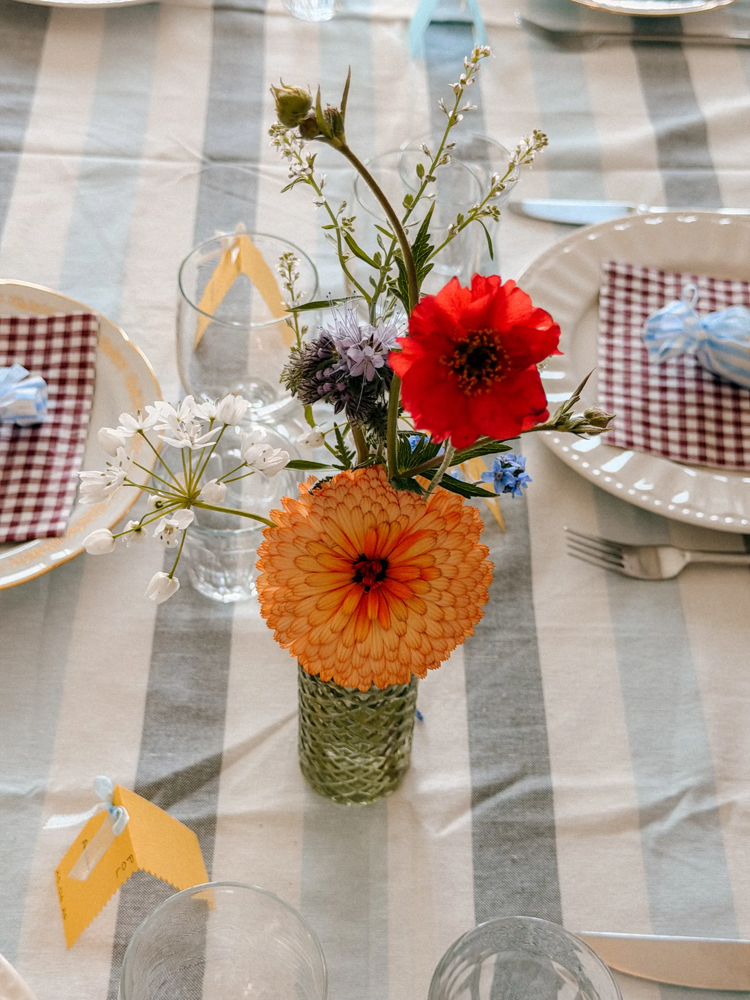
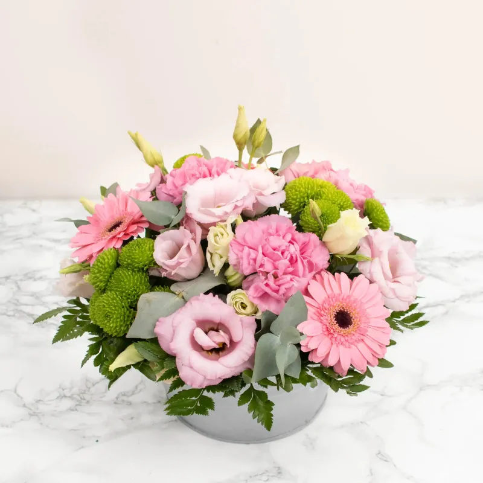
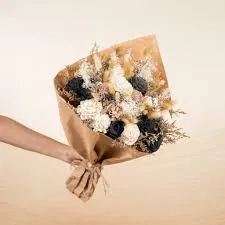
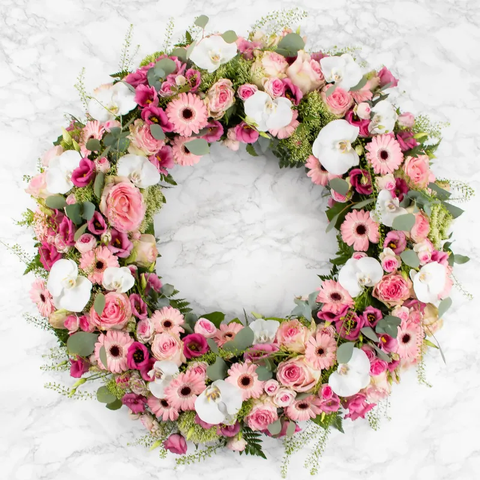
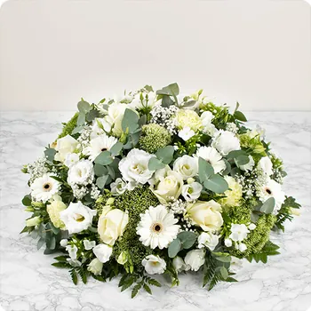

★★★★★
« Une adresse comme on en rêve à Trébeurden : le vin, les fleurs, et surtout l’accueil d’Erell et Tanguy. On ressort à chaque fois avec une pépite et le sourire. »
Et si on retournait à nos basiques ? Des roses en juin, du mimosa en janvier… et, chaque fois que c'est possible, des fleurs de saison qui viennent de chez nous. Chez Arrosé, fleuriste engagé, on essaie autant que possible de privilégier des fleurs locales, cultivées en Bretagne et en France, en fonction de ce que la saison nous offre.
Pourquoi ce choix ? Parce qu'une fleur qui pousse au bon moment, dans son climat naturel, c'est la fleur qui tiendra le plus longtemps chez vous.

C'est dans cet esprit que, d'avril à octobre, nous avons l'honneur et le plaisir de travailler main dans la main avec Léa, du Jardin des Sens. Productrice de fleurs bio locales, elle plante, chouchoute et récolte de véritables petites pépites florales à seulement 30 minutes de la boutique. Une collaboration précieuse qui nous permet de proposer des bouquets de fleurs fraîches et de saison, cultivés dans le respect du rythme de la nature.
Ses fleurs poussent en pleine terre, en plein champ, sans forcer les cycles naturels. C'est aussi pour cette raison que notre collaboration s'étend sur six mois seulement : la belle saison, celle où la terre bretonne offre le meilleur d'elle-même.
Venir dans notre boutique, c'est choisir une fleuriste locale à taille humaine, attachée à la traçabilité de ses fleurs fraîches et à la valorisation des producteurs bretons dès que la saison le permet.
Que ce soit pour un bouquet de fleurs de saison, une composition florale artisanale, ou pour accompagner tous vos événements — mariage, anniversaire, séminaire d'entreprise — nous sommes également présents dans les moments plus délicats, avec des créations de deuil réalisées avec soin : coussins, gerbes, couronnes et compositions funéraires. Et pour toute autre envie florale, aussi originale soit-elle, notre équipe est à votre écoute pour donner vie à votre demande.
Envie de découvrir nos créations florales du moment ? Passez nous voir en boutique ou parcourez notre sélection ci-dessous. 🌼








Un bouquet sur mesure, une commande pour un évènement, une création de deuil…
On en discute avec plaisir : → Contact
« Une adresse comme on en rêve à Trébeurden : le vin, les fleurs, et surtout l’accueil d’Erell et Tanguy. On ressort à chaque fois avec une pépite et le sourire. »
« Superbe sélection de vins de vignerons indépendants, des conseils toujours justes. Et des bouquets magnifiques avec des fleurs de saison. Un vrai coup de cœur ! »
« Atelier création florale au top, moment convivial et créatif. Je recommande les yeux fermés, on se sent comme à la maison. »
« Prestation vin pour notre mariage impeccable : location de tireuse et super sélection. Merci pour votre professionnalisme et votre bonne humeur ! »